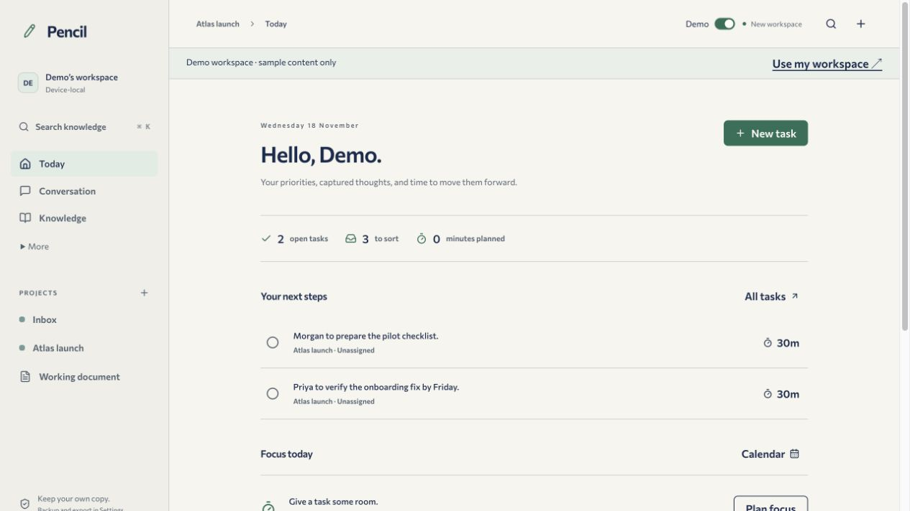

PENCIL / BY LAZO
Your notes, tasks
and time to think
Capture ideas, keep their context and turn the next step into focused work.
Free forever · Mac preview available
A THOUGHT WORTH KEEPING
Start with a smaller launch.
Why?
Learn where people get stuck before opening access.
A CLOSER LOOK
From a thought to a next step
Real browser-demo screens with fictional notes. The Mac preview is a separate app.
Keep a note close to your tasks and current project.


Try the browser demo with sample data. Browser and Mac workspaces are separate. Keep a backup of your work.
YOUR LAZO ACCOUNT
Get the current Mac preview
One account gives you access to Pencil and Power Chords.
Pencil 0.9.3 · Build 7 · Apple Silicon
Unsigned preview. macOS may ask for one-time approval.